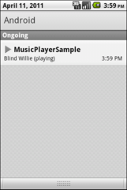
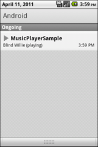

In this document
- The Basics
- Manifest Declarations
- Using MediaPlayer
- Using a Service with MediaPlayer
- Handling the AUDIO_BECOMING_NOISY Intent
- Retrieving Media from a Content Resolver
Key classes
See also
The Android multimedia framework includes support for playing variety of common media types, so
that you can easily integrate audio, video and images into your applications. You can play audio or
video from media files stored in your application's resources (raw resources), from standalone files
in the filesystem, or from a data stream arriving over a network connection, all using MediaPlayer APIs.
This document shows you how to write a media-playing application that interacts with the user and the system in order to obtain good performance and a pleasant user experience.
Note: You can play back the audio data only to the standard output device. Currently, that is the mobile device speaker or a Bluetooth headset. You cannot play sound files in the conversation audio during a call.
The Basics
The following classes are used to play sound and video in the Android framework:
MediaPlayer- This class is the primary API for playing sound and video.
AudioManager- This class manages audio sources and audio output on a device.
Manifest Declarations
Before starting development on your application using MediaPlayer, make sure your manifest has the appropriate declarations to allow use of related features.
- Internet Permission - If you are using MediaPlayer to stream network-based
content, your application must request network access.
<uses-permission android:name="android.permission.INTERNET" />
- Wake Lock Permission - If your player application needs to keep the screen
from dimming or the processor from sleeping, or uses the
MediaPlayer.setScreenOnWhilePlaying()orMediaPlayer.setWakeMode()methods, you must request this permission.<uses-permission android:name="android.permission.WAKE_LOCK" />
Using MediaPlayer
One of the most important components of the media framework is the
MediaPlayer
class. An object of this class can fetch, decode, and play both audio and video
with minimal setup. It supports several different media sources such as:
- Local resources
- Internal URIs, such as one you might obtain from a Content Resolver
- External URLs (streaming)
For a list of media formats that Android supports, see the Android Supported Media Formats document.
Here is an example
of how to play audio that's available as a local raw resource (saved in your application's
res/raw/ directory):
MediaPlayer mediaPlayer = MediaPlayer.create(context, R.raw.sound_file_1);
mediaPlayer.start(); // no need to call prepare(); create() does that for you
In this case, a "raw" resource is a file that the system does not try to parse in any particular way. However, the content of this resource should not be raw audio. It should be a properly encoded and formatted media file in one of the supported formats.
And here is how you might play from a URI available locally in the system (that you obtained through a Content Resolver, for instance):
Uri myUri = ....; // initialize Uri here
MediaPlayer mediaPlayer = new MediaPlayer();
mediaPlayer.setAudioStreamType(AudioManager.STREAM_MUSIC);
mediaPlayer.setDataSource(getApplicationContext(), myUri);
mediaPlayer.prepare();
mediaPlayer.start();
Playing from a remote URL via HTTP streaming looks like this:
String url = "http://........"; // your URL here
MediaPlayer mediaPlayer = new MediaPlayer();
mediaPlayer.setAudioStreamType(AudioManager.STREAM_MUSIC);
mediaPlayer.setDataSource(url);
mediaPlayer.prepare(); // might take long! (for buffering, etc)
mediaPlayer.start();
Note: If you're passing a URL to stream an online media file, the file must be capable of progressive download.
Caution: You must either catch or pass
IllegalArgumentException and IOException when using
setDataSource(), because
the file you are referencing might not exist.
Asynchronous Preparation
Using MediaPlayer can be straightforward in
principle. However, it's important to keep in mind that a few more things are
necessary to integrate it correctly with a typical Android application. For
example, the call to prepare() can
take a long time to execute, because
it might involve fetching and decoding media data. So, as is the case with any
method that may take long to execute, you should never call it from your
application's UI thread. Doing that will cause the UI to hang until the method returns,
which is a very bad user experience and can cause an ANR (Application Not Responding) error. Even if
you expect your resource to load quickly, remember that anything that takes more than a tenth
of a second to respond in the UI will cause a noticeable pause and will give
the user the impression that your application is slow.
To avoid hanging your UI thread, spawn another thread to
prepare the MediaPlayer and notify the main thread when done. However, while
you could write the threading logic
yourself, this pattern is so common when using MediaPlayer that the framework
supplies a convenient way to accomplish this task by using the
prepareAsync() method. This method
starts preparing the media in the background and returns immediately. When the media
is done preparing, the onPrepared()
method of the MediaPlayer.OnPreparedListener, configured through
setOnPreparedListener() is called.
Managing State
Another aspect of a MediaPlayer that you should keep in mind is
that it's state-based. That is, the MediaPlayer has an internal state
that you must always be aware of when writing your code, because certain operations
are only valid when then player is in specific states. If you perform an operation while in the
wrong state, the system may throw an exception or cause other undesireable behaviors.
The documentation in the
MediaPlayer class shows a complete state diagram,
that clarifies which methods move the MediaPlayer from one state to another.
For example, when you create a new MediaPlayer, it is in the Idle
state. At that point, you should initialize it by calling
setDataSource(), bringing it
to the Initialized state. After that, you have to prepare it using either the
prepare() or
prepareAsync() method. When
the MediaPlayer is done preparing, it will then enter the Prepared
state, which means you can call start()
to make it play the media. At that point, as the diagram illustrates,
you can move between the Started, Paused and PlaybackCompleted states by
calling such methods as
start(),
pause(), and
seekTo(),
amongst others. When you
call stop(), however, notice that you
cannot call start() again until you
prepare the MediaPlayer again.
Always keep the state diagram
in mind when writing code that interacts with a
MediaPlayer object, because calling its methods from the wrong state is a
common cause of bugs.
{kind=link}
Releasing the MediaPlayer
A MediaPlayer can consume valuable
system resources.
Therefore, you should always take extra precautions to make sure you are not
hanging on to a MediaPlayer instance longer than necessary. When you
are done with it, you should always call
release() to make sure any
system resources allocated to it are properly released. For example, if you are
using a MediaPlayer and your activity receives a call to onStop(), you must release the MediaPlayer,
because it
makes little sense to hold on to it while your activity is not interacting with
the user (unless you are playing media in the background, which is discussed in the next section).
When your activity is resumed or restarted, of course, you need to
create a new MediaPlayer and prepare it again before resuming playback.
Here's how you should release and then nullify your MediaPlayer:
mediaPlayer.release();
mediaPlayer = null;
As an example, consider the problems that could happen if you
forgot to release the MediaPlayer when your activity is stopped, but create a
new one when the activity starts again. As you may know, when the user changes the
screen orientation (or changes the device configuration in another way),
the system handles that by restarting the activity (by default), so you might quickly
consume all of the system resources as the user
rotates the device back and forth between portrait and landscape, because at each
orientation change, you create a new MediaPlayer that you never
release. (For more information about runtime restarts, see Handling Runtime Changes.)
You may be wondering what happens if you want to continue playing
"background media" even when the user leaves your activity, much in the same
way that the built-in Music application behaves. In this case, what you need is
a MediaPlayer controlled by a Service, as
discussed in Using a Service with MediaPlayer.
Using a Service with MediaPlayer
If you want your media to play in the background even when your application
is not onscreen—that is, you want it to continue playing while the user is
interacting with other applications—then you must start a
Service and control the
MediaPlayer instance from there.
You should be careful about this setup, because the user and the system have expectations
about how an application running a background service should interact with the rest of the
system. If your application does not fulfil those expectations, the user may
have a bad experience. This section describes the main issues that you should be
aware of and offers suggestions about how to approach them.
Running asynchronously
First of all, like an Activity, all work in a
Service is done in a single thread by
default—in fact, if you're running an activity and a service from the same application, they
use the same thread (the "main thread") by default. Therefore, services need to
process incoming intents quickly
and never perform lengthy computations when responding to them. If any heavy
work or blocking calls are expected, you must do those tasks asynchronously: either from
another thread you implement yourself, or using the framework's many facilities
for asynchronous processing.
For instance, when using a MediaPlayer from your main thread,
you should call prepareAsync() rather than
prepare(), and implement
a MediaPlayer.OnPreparedListener
in order to be notified when the preparation is complete and you can start playing.
For example:
public class MyService extends Service implements MediaPlayer.OnPreparedListener {
private static final String ACTION_PLAY = "com.example.action.PLAY";
MediaPlayer mMediaPlayer = null;
public int onStartCommand(Intent intent, int flags, int startId) {
...
if (intent.getAction().equals(ACTION_PLAY)) {
mMediaPlayer = ... // initialize it here
mMediaPlayer.setOnPreparedListener(this);
mMediaPlayer.prepareAsync(); // prepare async to not block main thread
}
}
/** Called when MediaPlayer is ready */
public void onPrepared(MediaPlayer player) {
player.start();
}
}
Handling asynchronous errors
On synchronous operations, errors would normally
be signaled with an exception or an error code, but whenever you use asynchronous
resources, you should make sure your application is notified
of errors appropriately. In the case of a MediaPlayer,
you can accomplish this by implementing a
MediaPlayer.OnErrorListener and
setting it in your MediaPlayer instance:
public class MyService extends Service implements MediaPlayer.OnErrorListener {
MediaPlayer mMediaPlayer;
public void initMediaPlayer() {
// ...initialize the MediaPlayer here...
mMediaPlayer.setOnErrorListener(this);
}
@Override
public boolean onError(MediaPlayer mp, int what, int extra) {
// ... react appropriately ...
// The MediaPlayer has moved to the Error state, must be reset!
}
}
It's important to remember that when an error occurs, the MediaPlayer
moves to the Error state (see the documentation for the
MediaPlayer class for the full state diagram)
and you must reset it before you can use it again.
Using wake locks
When designing applications that play media in the background, the device may go to sleep while your service is running. Because the Android system tries to conserve battery while the device is sleeping, the system tries to shut off any of the phone's features that are not necessary, including the CPU and the WiFi hardware. However, if your service is playing or streaming music, you want to prevent the system from interfering with your playback.
In order to ensure that your service continues to run under those conditions, you have to use "wake locks." A wake lock is a way to signal to the system that your application is using some feature that should stay available even if the phone is idle.
Notice: You should always use wake locks sparingly and hold them only for as long as truly necessary, because they significantly reduce the battery life of the device.
To ensure that the CPU continues running while your MediaPlayer is
playing, call the setWakeMode() method when initializing your MediaPlayer. Once you do,
the MediaPlayer holds the specified lock while playing and releases the lock
when paused or stopped:
mMediaPlayer = new MediaPlayer();
// ... other initialization here ...
mMediaPlayer.setWakeMode(getApplicationContext(), PowerManager.PARTIAL_WAKE_LOCK);
However, the wake lock acquired in this example guarantees only that the CPU remains awake. If
you are streaming media over the
network and you are using Wi-Fi, you probably want to hold a
WifiLock as
well, which you must acquire and release manually. So, when you start preparing the
MediaPlayer with the remote URL, you should create and acquire the Wi-Fi lock.
For example:
WifiLock wifiLock = ((WifiManager) getSystemService(Context.WIFI_SERVICE))
.createWifiLock(WifiManager.WIFI_MODE_FULL, "mylock");
wifiLock.acquire();
When you pause or stop your media, or when you no longer need the network, you should release the lock:
wifiLock.release();
Running as a foreground service
Services are often used for performing background tasks, such as fetching emails, synchronizing data, downloading content, amongst other possibilities. In these cases, the user is not actively aware of the service's execution, and probably wouldn't even notice if some of these services were interrupted and later restarted.
But consider the case of a service that is playing music. Clearly this is a service that the user is actively aware of and the experience would be severely affected by any interruptions. Additionally, it's a service that the user will likely wish to interact with during its execution. In this case, the service should run as a "foreground service." A foreground service holds a higher level of importance within the system—the system will almost never kill the service, because it is of immediate importance to the user. When running in the foreground, the service also must provide a status bar notification to ensure that users are aware of the running service and allow them to open an activity that can interact with the service.
In order to turn your service into a foreground service, you must create a
Notification for the status bar and call
startForeground() from the Service. For example:
String songName;
// assign the song name to songName
PendingIntent pi = PendingIntent.getActivity(getApplicationContext(), 0,
new Intent(getApplicationContext(), MainActivity.class),
PendingIntent.FLAG_UPDATE_CURRENT);
Notification notification = new Notification();
notification.tickerText = text;
notification.icon = R.drawable.play0;
notification.flags |= Notification.FLAG_ONGOING_EVENT;
notification.setLatestEventInfo(getApplicationContext(), "MusicPlayerSample",
"Playing: " + songName, pi);
startForeground(NOTIFICATION_ID, notification);
While your service is running in the foreground, the notification you
configured is visible in the notification area of the device. If the user
selects the notification, the system invokes the PendingIntent you supplied. In
the example above, it opens an activity (MainActivity).
Figure 1 shows how your notification appears to the user:
 

Figure 1. Screenshots of a foreground service's notification, showing the notification icon in the status bar (left) and the expanded view (right).
You should only hold on to the "foreground service" status while your
service is actually performing something the user is actively aware of. Once
that is no longer true, you should release it by calling
stopForeground():
stopForeground(true);
For more information, see the documentation about Services and Status Bar Notifications.
Handling audio focus
Even though only one activity can run at any given time, Android is a multi-tasking environment. This poses a particular challenge to applications that use audio, because there is only one audio output and there may be several media services competing for its use. Before Android 2.2, there was no built-in mechanism to address this issue, which could in some cases lead to a bad user experience. For example, when a user is listening to music and another application needs to notify the user of something very important, the user might not hear the notification tone due to the loud music. Starting with Android 2.2, the platform offers a way for applications to negotiate their use of the device's audio output. This mechanism is called Audio Focus.
When your application needs to output audio such as music or a notification, you should always request audio focus. Once it has focus, it can use the sound output freely, but it should always listen for focus changes. If it is notified that it has lost the audio focus, it should immediately either kill the audio or lower it to a quiet level (known as "ducking"—there is a flag that indicates which one is appropriate) and only resume loud playback after it receives focus again.
Audio Focus is cooperative in nature. That is, applications are expected (and highly encouraged) to comply with the audio focus guidelines, but the rules are not enforced by the system. If an application wants to play loud music even after losing audio focus, nothing in the system will prevent that. However, the user is more likely to have a bad experience and will be more likely to uninstall the misbehaving application.
To request audio focus, you must call
requestAudioFocus() from the AudioManager, as the example below demonstrates:
AudioManager audioManager = (AudioManager) getSystemService(Context.AUDIO_SERVICE);
int result = audioManager.requestAudioFocus(this, AudioManager.STREAM_MUSIC,
AudioManager.AUDIOFOCUS_GAIN);
if (result != AudioManager.AUDIOFOCUS_REQUEST_GRANTED) {
// could not get audio focus.
}
The first parameter to requestAudioFocus()
is an AudioManager.OnAudioFocusChangeListener,
whose onAudioFocusChange() method is called whenever there is a change in audio focus. Therefore, you
should also implement this interface on your service and activities. For example:
class MyService extends Service
implements AudioManager.OnAudioFocusChangeListener {
// ....
public void onAudioFocusChange(int focusChange) {
// Do something based on focus change...
}
}
The focusChange parameter tells you how the audio focus has changed, and
can be one of the following values (they are all constants defined in
AudioManager):
AUDIOFOCUS_GAIN: You have gained the audio focus.AUDIOFOCUS_LOSS: You have lost the audio focus for a presumably long time. You must stop all audio playback. Because you should expect not to have focus back for a long time, this would be a good place to clean up your resources as much as possible. For example, you should release theMediaPlayer.AUDIOFOCUS_LOSS_TRANSIENT: You have temporarily lost audio focus, but should receive it back shortly. You must stop all audio playback, but you can keep your resources because you will probably get focus back shortly.AUDIOFOCUS_LOSS_TRANSIENT_CAN_DUCK: You have temporarily lost audio focus, but you are allowed to continue to play audio quietly (at a low volume) instead of killing audio completely.
Here is an example implementation:
public void onAudioFocusChange(int focusChange) {
switch (focusChange) {
case AudioManager.AUDIOFOCUS_GAIN:
// resume playback
if (mMediaPlayer == null) initMediaPlayer();
else if (!mMediaPlayer.isPlaying()) mMediaPlayer.start();
mMediaPlayer.setVolume(1.0f, 1.0f);
break;
case AudioManager.AUDIOFOCUS_LOSS:
// Lost focus for an unbounded amount of time: stop playback and release media player
if (mMediaPlayer.isPlaying()) mMediaPlayer.stop();
mMediaPlayer.release();
mMediaPlayer = null;
break;
case AudioManager.AUDIOFOCUS_LOSS_TRANSIENT:
// Lost focus for a short time, but we have to stop
// playback. We don't release the media player because playback
// is likely to resume
if (mMediaPlayer.isPlaying()) mMediaPlayer.pause();
break;
case AudioManager.AUDIOFOCUS_LOSS_TRANSIENT_CAN_DUCK:
// Lost focus for a short time, but it's ok to keep playing
// at an attenuated level
if (mMediaPlayer.isPlaying()) mMediaPlayer.setVolume(0.1f, 0.1f);
break;
}
}
Keep in mind that the audio focus APIs are available only with API level 8 (Android 2.2) and above, so if you want to support previous versions of Android, you should adopt a backward compatibility strategy that allows you to use this feature if available, and fall back seamlessly if not.
You can achieve backward compatibility either by calling the audio focus methods by reflection
or by implementing all the audio focus features in a separate class (say,
AudioFocusHelper). Here is an example of such a class:
public class AudioFocusHelper implements AudioManager.OnAudioFocusChangeListener {
AudioManager mAudioManager;
// other fields here, you'll probably hold a reference to an interface
// that you can use to communicate the focus changes to your Service
public AudioFocusHelper(Context ctx, /* other arguments here */) {
mAudioManager = (AudioManager) mContext.getSystemService(Context.AUDIO_SERVICE);
// ...
}
public boolean requestFocus() {
return AudioManager.AUDIOFOCUS_REQUEST_GRANTED ==
mAudioManager.requestAudioFocus(mContext, AudioManager.STREAM_MUSIC,
AudioManager.AUDIOFOCUS_GAIN);
}
public boolean abandonFocus() {
return AudioManager.AUDIOFOCUS_REQUEST_GRANTED ==
mAudioManager.abandonAudioFocus(this);
}
@Override
public void onAudioFocusChange(int focusChange) {
// let your service know about the focus change
}
}
You can create an instance of AudioFocusHelper class only if you detect that
the system is running API level 8 or above. For example:
if (android.os.Build.VERSION.SDK_INT >= 8) {
mAudioFocusHelper = new AudioFocusHelper(getApplicationContext(), this);
} else {
mAudioFocusHelper = null;
}
Performing cleanup
As mentioned earlier, a MediaPlayer object can consume a significant
amount of system resources, so you should keep it only for as long as you need and call
release() when you are done with it. It's important
to call this cleanup method explicitly rather than rely on system garbage collection because
it might take some time before the garbage collector reclaims the MediaPlayer,
as it's only sensitive to memory needs and not to shortage of other media-related resources.
So, in the case when you're using a service, you should always override the
onDestroy() method to make sure you are releasing
the MediaPlayer:
public class MyService extends Service {
MediaPlayer mMediaPlayer;
// ...
@Override
public void onDestroy() {
if (mMediaPlayer != null) mMediaPlayer.release();
}
}
You should always look for other opportunities to release your MediaPlayer
as well, apart from releasing it when being shut down. For example, if you expect not
to be able to play media for an extended period of time (after losing audio focus, for example),
you should definitely release your existing MediaPlayer and create it again
later. On the
other hand, if you only expect to stop playback for a very short time, you should probably
hold on to your MediaPlayer to avoid the overhead of creating and preparing it
again.
Handling the AUDIO_BECOMING_NOISY Intent
Many well-written applications that play audio automatically stop playback when an event occurs that causes the audio to become noisy (ouput through external speakers). For instance, this might happen when a user is listening to music through headphones and accidentally disconnects the headphones from the device. However, this behavior does not happen automatically. If you don't implement this feature, audio plays out of the device's external speakers, which might not be what the user wants.
You can ensure your app stops playing music in these situations by handling
the ACTION_AUDIO_BECOMING_NOISY intent, for which you can
register a receiver by
adding the following to your manifest:
<receiver android:name=".MusicIntentReceiver">
<intent-filter>
<action android:name="android.media.AUDIO_BECOMING_NOISY" />
</intent-filter>
</receiver>
This registers the MusicIntentReceiver class as a broadcast receiver for that
intent. You should then implement this class:
public class MusicIntentReceiver extends android.content.BroadcastReceiver {
@Override
public void onReceive(Context ctx, Intent intent) {
if (intent.getAction().equals(
android.media.AudioManager.ACTION_AUDIO_BECOMING_NOISY)) {
// signal your service to stop playback
// (via an Intent, for instance)
}
}
}
Retrieving Media from a Content Resolver
Another feature that may be useful in a media player application is the ability to
retrieve music that the user has on the device. You can do that by querying the ContentResolver for external media:
ContentResolver contentResolver = getContentResolver();
Uri uri = android.provider.MediaStore.Audio.Media.EXTERNAL_CONTENT_URI;
Cursor cursor = contentResolver.query(uri, null, null, null, null);
if (cursor == null) {
// query failed, handle error.
} else if (!cursor.moveToFirst()) {
// no media on the device
} else {
int titleColumn = cursor.getColumnIndex(android.provider.MediaStore.Audio.Media.TITLE);
int idColumn = cursor.getColumnIndex(android.provider.MediaStore.Audio.Media._ID);
do {
long thisId = cursor.getLong(idColumn);
String thisTitle = cursor.getString(titleColumn);
// ...process entry...
} while (cursor.moveToNext());
}
To use this with the MediaPlayer, you can do this:
long id = /* retrieve it from somewhere */;
Uri contentUri = ContentUris.withAppendedId(
android.provider.MediaStore.Audio.Media.EXTERNAL_CONTENT_URI, id);
mMediaPlayer = new MediaPlayer();
mMediaPlayer.setAudioStreamType(AudioManager.STREAM_MUSIC);
mMediaPlayer.setDataSource(getApplicationContext(), contentUri);
// ...prepare and start...